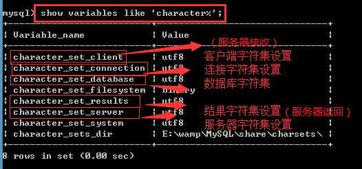

MySql2-day9数据库（字符集、存储引擎、数据类型）
一、字符集 ：字符及其编码集合就是字符集（character set）。
(1) 常用字符集：ASCII，
big5(繁体中文),GB2312，GBK（简体中文）一个字符是两个字节，其中英文和数字还是一字节
latin1(英文字母)一个字符是一个字节
UTF8（8-bit Unicode Transformation Format国际编码）一个中文字符是3个字节其中英文和数字还是一字节
查看服务器可用的字符集： 1.使用phpMyAdmin查看 2.cmd--show character set;
查看当前环境数据库各个结构的字符集编码：show variables like 'character_set_%';
(2)校验集：对于数据英文字母大小写是否进行区分。查看：show collation;
1. 校对规则 ：是指在同一字符集内字符之间的比较排序规则。(collation，collate,整理)
2.校验集命名规范3种
以校对规则对应的字符集名称开头，中间部分通常为语言，以_ci/_cs/_bin结尾。
1- _ci:表示大小写不敏感insensitive(A==a),2- _cs:大小写敏感sensitive(A!=a),3- _bin:按ASCII编码值比较a>A。
(3)字符集和校对规则对应关系
一种校对规则，唯一对应一个字符集。
一个字符集可以对应多种校对规则，其中有一个是默认校对规则(Default YES)；
(4)字符集及校对规则的设置
1、查看当前环境的字符集设置show variables like 'character_set%';

2、客户端设置：
设置接收客户端的字符集编码set character_set_client=gbk;
设置返回客户端的字符集编码set character_set_results=gbk;
设置完毕以后就可以存储或者读取中文字符。
快捷设置： set names gbk 可以同时设置三个值，分别是接收客户端数据，返回客户端数据和连接处理层的字符集编码。
set 是会话模式，意味着一旦退出，就还原，所以建议在每次登陆数据库的时候，第一时间输入set names gbk；
cmd的字符集编码是gbk不能修改。所以要让cmd处理汉字，必须每次进入mysql数据库设置set names gbk；
3、服务器端设置：
继承关系：
创建数据库时不指定字符集，数据库继承数据库服务器默认字符集
创建数据表时不指定字符集，数据表继承数据库字符集
可以设置字段字符集，字段字符集优先级最高。
一般情况下，工作中不会给字段单独设置字符集编码，所以一般是以表格的字符集编码为主。
服务器端设置默认的字符集编码：
1.打开my.ini，搜索character-set-server，可以修改默认的字符集编码。重启mysql即可。
这个修改是永久生效。语法：character_set_server=utf8;
2. set character_set_server = 字符集编码， 会话模式的修改，当退出的时候会自动还原。
(5)创建和修改数据库，表格和字段时字符集编码以及校验集设置和修改
创建数据库时修改：create database 数据库名称 charset=字符集 collate=校验集
创建表格时修改：create table 表名() charset=字符集 collate=校验集
创建字段时修改：create table 表名( 字段名 字段数据类型 字段属性 charset 字符集 collate 校验集);
注意：设置字段时，校验集和字符集不能加上=，用空格区分。
修改数据库时修改：alter database 数据库名称 charset=字符集 collate =校验集
修改表格时修改：alter table 表名 charset=字符集 collate=校验集
修改字段时修改：alter table modify 字段名 字段类型 字段属性 charset 字符集 collate 校验集
二 存储引擎
数据表在内存或磁盘上的存储方式。存储引擎关系到数据表的性能。
- 查看MySQL支持的存储引擎：show engines;
1、Innodb存储引擎： Windows环境下MySQL数据库数据表的默认存储引擎
创建一个InnoDB表，对应在磁盘内db1下创建一个（.frm）表结构文件，所有的InnoDB表数据都放在mysql的data文件下，文件名是ibdata。数据较多时可以自动分为ibdata1,ibdata2…
引擎特点：1- 数据更新速度快，2- 支持事务,-不易产生大量垃圾碎片；3- 插入和读取稍慢；
2、Myisam存储引擎
- 当创建一个MyISAM作为存储引擎的数据表时，就会在磁盘上建立三个文件：
1 .frm 表的结构文件；
2 .MYD 表的数据文件；
3 .MYI 表的索引。（索引相当于目录。实现数据的快速定位）
特点：MyISAM存储引擎数据表独立于操作系统,可轻松备份及移植数据，将三文件复制到别的数据库即可；
1- 数据表拥有较高的写入和查询速度；2- 数据更新效率低，3- 不支持事务，4-易产生大量垃圾碎片
3、存储引擎修改：alter table tb3 engine innodb;
4、存储引擎的选择
- myisam：支持全文索引和表压缩
写入、读取数据速度非常快，适合使用场合dedecms/phpcms/discuz/微博系统，新闻网站等写入、读取操作多的系统。
- innodb:支持事务和外键
更新速度比较快，适合业务逻辑比较强的系统，修改操作较多的，例如ecshop商城系统、crm、办公系统。需要事务支持等场合，如银行等。
insert into 表 select * from 表（蠕虫复制）；自己复制自己，成次方增加。
三 MySQL数据类型
分类
- 整型：tinyint、smallint、mediumint、int、bigint占用字节分别为1、2、3、4、8
- 浮点型：float、double、decimal 占用字节分别为4、8
- 字符型： char、varchar、enum、set
- 文本型：tinytext、mediumtext、text、longtext，blob等
- 日期时间型：date、time、datetime、timestamp、year
1. 整型
Int[(M)],Smallint[(M)],tinyint[(M)]……- M表示最小的显示宽度,表示最小M位，不足M位前补0
-[(M)]可选，表示整型的最小显示宽度。如果整数不够指定宽度，则左侧用空格填充。如果整数超出M指定的宽度而不超出表示范围，则值不受影响。
1.1Zerofilll 零填充属性：例---id int(5) zerofill
表示不够显示宽度[(M)]大，将原来默认的空格填充改为零（0）填充。
- 必须位于类型之后，not null 之前。- 添加zerofill 属性后，自动添加unsigned属性。
1.2Unsigned 无符号属性--语法：字段名 int unsigned 字段属性
添加unsigned属性之后，字段不可以存储负数。从0开始正数部分相应的扩大一倍。
如果不存储负数，尽量添加unsigned属性。
1.3 整型类型的选择
3.1首先考虑表示范围，其次是存储空间。
3.2尽量添加unsigned属性（不存储负数时）。
3.3Tinyint适合存储年龄，身高（cm为单位），分类编号，学院编号等
3.4mediumint unsigned，int unsigned
2、浮点型:float[(M,D)]、double[(M,D)] 、decimal[(M,D)] 占用字节分别是4、8、（约M/2+1）
M--有效数字的位数，D--小数数字的位数。对于0.12345，M= 5 ，D=5
float默认情况下为6位有效数字，超出6位四舍五入。double默认情况下为16位有效数字
Decimal，默认的为（10，0）。存储小数时需要修改M,D.Decimal数据类型最多可以存储30位小数：
- Float,double不精确存储，类似工资的数据不能用浮点型存储。
要精确存储时使用定点型。Decimal是小数和整数分开存储，小数30位内永远精确。
- 如果可以使用整型存储，不建议使用浮点型。
不指定M,D时，float,double存储情况：

3、字符型：
3.1 char（N）和varchar（N）最大支持字符分别为255和65535
M表示最大的存储长度，指定char或者varchar的时候必须要指定最大长度。
注意：一条记录最多支持65535个字节

Char和varchar区别：

Char是定长字符串。不足最大长度，使用空格填充。固定占N字符
Varchar变长的字符串，专门使用1到2个字节保存字符串长度。最小1字符，最多占N+1字符。
空间上varchar较为灵活，处理速度上char较高。
3.2枚举：enum枚举类似于html中的单选框，也就是给出几个选项，必须要从其中选择一个。
enum中的选项存储在mysql中，底层是以整数进行存储的，1代表第一个选项，2代表第二个选项。。。。。
使用()来罗列可选项，每个选项使用' '包括。字段的默认值只能是罗列的值中的某一个。
如果存储的是null，null存储进去以后，是以整数0进行存储的。 最大取值65535
例：alter table student modify gender enum('男','女','保密') not null default '保密';//注意enum也是字符型，不能和float ,int等同时使用
3.3集合：set类似于html中的复选框，可以一次性选择多个值。 最大取值64。

第一个是2^0，第二个是2^1，第三个是2^2以此类推。选择多项直接将几项的值相加即可。
集合存储内容底层代码就是一个按位或的过程。
思考： 若一个枚举占用的空间是2个字节，这个枚举型的数据最多可以有多少个选项？答案：65535个选项。
思考： 已知一个集合占用空间是8个字节，这个集合型的数据最多可以有多少个选项？答案：64个选项。
一个字节8位， 一个中文字符GBK下2个字节，UTF8下是3个字节
3.4文本型
数据类型tinytext、text、mediumtext、longtext分别占用空间2^8-1、2^16-1、2^24-1、2^32-1。
数据类型tinyblob、blob、mediumblob、longblob分别占用空间2^8-1、2^16-1、2^24-1、2^32-1。
Blob用来存储媒体类型等文件的二进制字符串信息等。
注意：通常情况下，我们不会将图片，音乐或者视频直接存储在数据库内部，因为占据的空间很大，我们通常情况下存储的就是文件所在的路径。
3.5日期时间型
date 的取值范围是从0-0-0一直到9999-12-31
除了使用字符串来存储，同样也可以用数字进行存储，但是存储的数字需要保证8位。
time 除了使用字符串来存储以外，也可以用数字存储，并且没有位数要求。例20170104
时间戳是从1970-01-01早上8点开始计算一直到2038-01-19 11:14:07结束。
year取值是1901--2055年，如果year只存储2位数，如果这个数字小于70,则是20XX年，如果这个数字大于70，则是19XX。
仅添加name，work_year字段数据时，upd_time(timestamp类型)字段数据进行自动更新，获取系统当前时间：
Timestamp具备默认值和自动更新功能，可以用来记录数据的更新时间。datetime是从00年00秒开始
可以使用函数 now() 或 current_date变量、current_time变量、current_timestamp变量插入当前日期时间信息。now()函数可以获取系统当前时间。
4、类型总结
类型选择原则1、满足表示范围2、尽可能占用少的空间(能用整型尽量使用整型)
部分日期时间型类型可以使用int代替。
int-->tinyint,mediumint
unsigned
int<--float
char<-->varchar
varchar->enum/set
datetime,timestamp->int